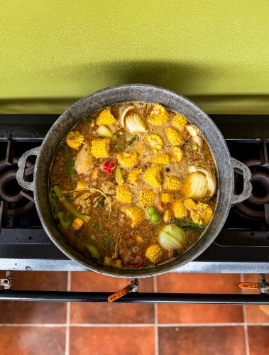
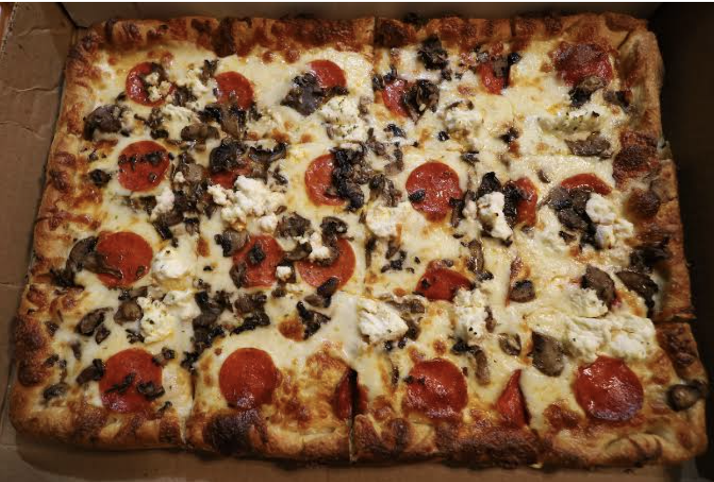

I considered this dish my favorite because it reminds me of my country. It could be the hottest day or the rainiest day and my mom would still made Sancocho. It's the type of food that you could eat everyday and would never get tired of.

| Ingredient | Amount |
|---|---|
| Beef cut into small pieces | 1lb |
| Goat Meat cut into small pieces | 1lb |
| Pork cut into small pieces | 1lb |
| Chicken cut into small pieces | 1lb |
| Ribs cut into small pieces | 1lb |
| Longaniza sausage cut into small pieces | 1lb |
| Smoked ham bones cut into small pieces | 1lb |
| Lime juice | 2 Limes |
| Chopped cilantro | 1 tsp |
| Ground regano | 1/2 tsp |
| Crushed garlic | 1 1/2 tbsp |
| Salt | 1 1/2 tbsp |
| Oil | 4 tbsp |
| Corn cut into pieces | 4 |
| Yam | 1/2 lb |
| Pumpkin/squash | 1/2 lb |
| Taro root | 1/2 lb |
| Green Plantains cut into pieces | 3 |
| Cassava | 1/2 lb |
Since he was young, the first dish that always came to mind whenever someone asked him what he favorite dish was he said pizza. In elemntary school, the after school staff would host a pizza and movie nigth every friday, and that is where he love grew towards pizza. His favorite has to be pepperoni and mushroom in a Sicilian Style

| Dough | Bread flour | Water | Instant yeast | Table salt | Extra-virgin olive oil |
|---|---|---|---|---|---|
| Sauce | Crushed tomatoes | Extra-virgin olive oil | Garlic | Salt and black pepper | Dried oregano |
| Cheese | Low-moisture mozzarella cheese | ||||
| Toppings | Chopped mushrooms | Pepparoni Slices |